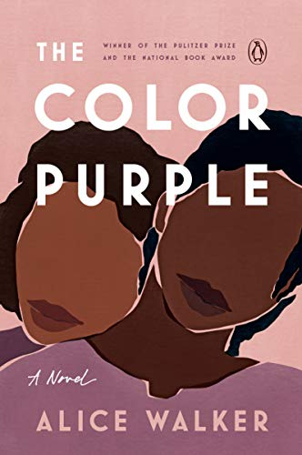
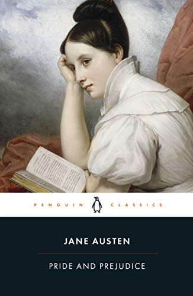
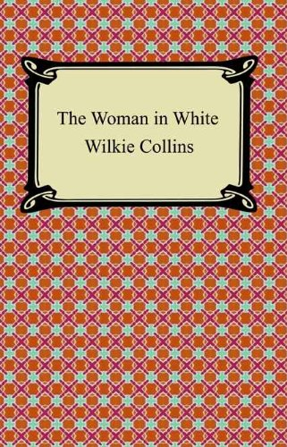
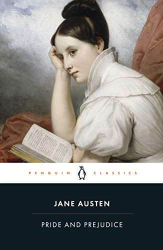
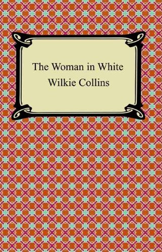

Our book suggestions:
 



The acclaimed story of two women and the strength of their bond in the racist society of 1980s America. The Color Purple won the 1983 Pulitzer Prize for Fiction, deservedly making Alice Walker the first African-American woman to receive the award.
Pi Patel is only a young boy when his freighter to North America sinks and he’s stuck on a small lifeboat with an orangutan, a hyena — and a tiger. Dramatic, humorous, and thoughtful, Yann Martel’s book made waves when it was published in 2001.
The source of film and TV adaptations, sequels, and several hundred reimaginings, Pride and Prejudice is one of the cornerstones of English literature. Through wit, sarcasm, and humor, this 19th-century novel centers on the five unmarried (gasp!) Bennet sisters while exploring themes of family, society, and, yes, love.
In the town of Comala, where ghosts are indistinguishable from the living, young Juan Preciado goes to look for his estranged father. In his only published novel, Rulfo weaves together a story that’s told in such a way that readers are left wondering who’s truly alive and who's dead — and whether there’s more to the town than first meets the eye.
A young and distressed woman dressed entirely in white one day appears to Walter Hartright, kicking off the plot of The Woman in White, often described as one of the finest mystery novels ever written.